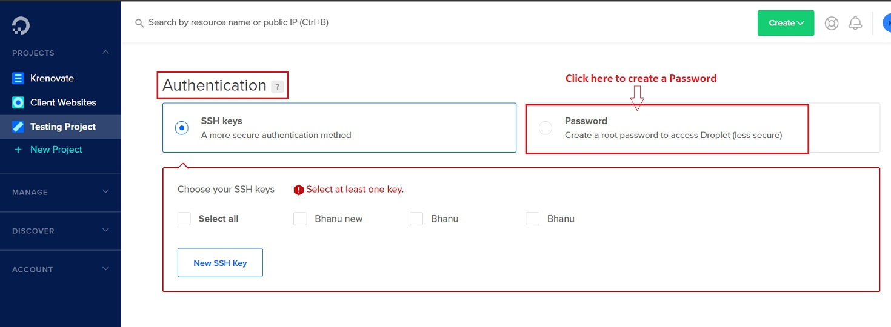

Setup a Server¶
At Krenovate, we use the OpenLiteSpeed WordPress to set up interactive client websites and blogs.
OpenLiteSpeed WordPress¶
The OpenLiteSpeed WordPress One-Click app is based on a standard WordPress image, but includes several great performance enhancements, including LiteSpeed's popular LSCache optimization plugin. This Wordpress + OpenLiteSpeed + LSCache image tends to be more than 300 times faster than a regular WordPress image!
OpenLiteSpeed WordPress One-Click automatically installs OpenLiteSpeed, LSCache, WordPress and any dependences. It also automates initial setup for components like Object Cache and PHP OPCache to reduce the time it takes to optimize a web server.
Setup the Droplet - Quick Start¶
Create Droplet¶
At Krenovate, DigitalOcean is used as Host. Below are the steps to create a droplet there:
Choose an Image¶
-
Click -> Marketplace -> Search for OpenLiteSpeed Wordpress.
-
The above step opens a search box where you can search for the image. See image below:

Choose a Plan¶
- While creating the droplet you will have to choose the size of CPU.
- There are multiple options which can be seen in the image below.
- There are 2 main things to check - CPU and Disk Space. You should choose the CPU option according to the project requirement.
Note
If you are a Tech lead, then the CPU choice should be discussed with the client and then created.
Choose a Data Center¶
-
Choose a Data center close to the visitor. (Bangalore in India)
Authentication - Password¶
- Create a root password to access Droplet.
-
Save root password in Password Cred Sheet.

Finalize & Create¶
Complete the below steps to finalize the Droplet:
- How many Droplets? - This is "1"by default.
- Choose a hostname - You can name it as per your requirement.
-
Select Projects - Select the relevant project where you want to assign the droplet.
-
Click -> Create Droplet
-
The progress is shown as below:

Add a DNS record¶
-
Add "A" record in your DNS with the IP address just created.
-
Adding a DNS record for the host depends where the domain is. You can read about the the DNS process under DNS management.
Login to Droplet¶
From a terminal on your local computer, connect to the server as root. Login to the Droplet (Host) as below:
ssh root@use_your_server_ip
Note
Make sure to substitute with the Droplet’s IP address.
Script to add Domain¶
An interactive script that runs, will prompt you for the domain & sub-domain and further questions.
Please input a valid domain:
Please verify it is correct. [y/N]
You can also automatically apply Let's Encrypt SSL if your domain is pointed to this server already. Enter y and your email address to finish the process.
Do you wish to issue a Let's encrypt certificate for this domain? [y/N]
Please enter your E-mail:
Please verify it is correct: [y/N]
Once finished, you should see Certificate has been successfully installed…
Do you wish to force HTTPS rewrite rule for this domain? [y/N]
Enter y to force HTTPS rules to be applied
Do you wish to update the system which include the web server? [Y/n]
This script will automatically go away after your domain has been added.
For more information, refer here.
Setup removal of Temp session files¶
Setup removal of temporary session files and run wp_cron
Disabling CRON from WordPress¶
- Navigate to wp_config.php file by navigating to public file (/var/www/html/)
-
Add the following line after WP_DEBUG:
define( ‘'DISABLE_WP_CRON', true ); -
The above command will disable WP CRON and use system CRON - Refer Link
Create a Cron job¶
Cron tab is already installed. Follow the below link to learn how to create/add/manage a cronjob.
How to use Cron to Automate Tasks
- Enter
crontab -ecommand to open the cron list.
Delete tmp session files¶
-
Add the following cron to delete temp session files:
*/30 * * * * find -O3 "/tmp" -ignore_readdir_race -depth -mindepth 1 -name 'sess_*' -type f -cmin +180 -delete -
Add the below cron to run WordPress cron every 15 minute - This should be substituted with Disabling CRON from WordPress
*/15 * * * * wget -q -O
Example: */15 * * * * wget -q -O - https://example.com
Note
Don't forget to change the url to the website url (sample Link)
Security - Prevent File Edits¶
In order to maintain the security and avoid any file edits, follow the below step:
-
Add the below code to the wp_config.php file:
(‘DISALLOW_FILE_EDIT', true);